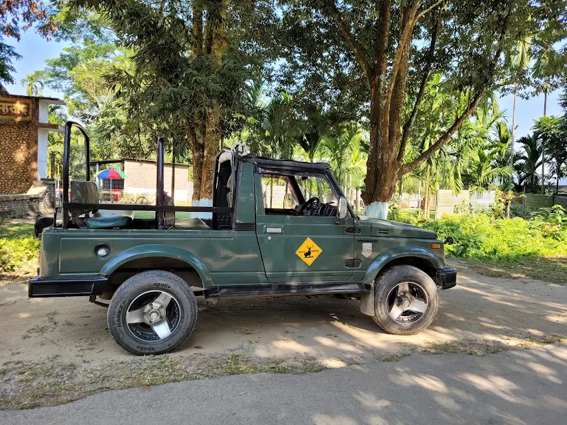
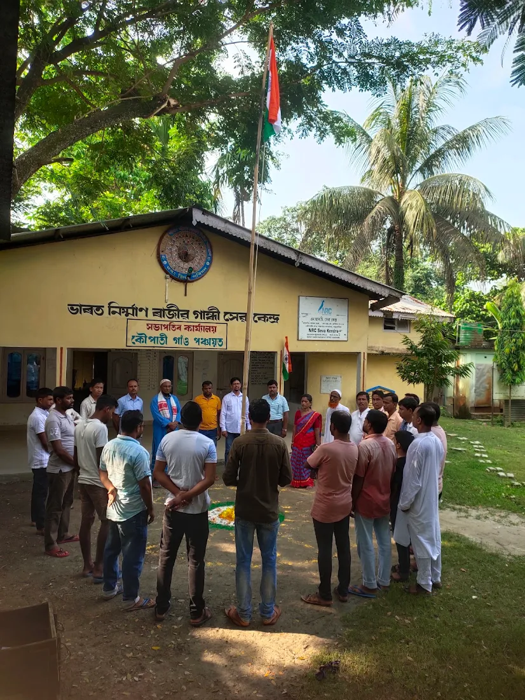
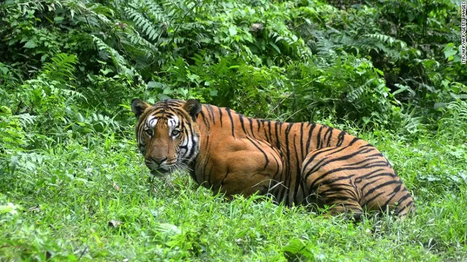

Wander through endless emerald tea gardens, serene village landscapes, and rich wildlife corridors near Orang National Park in Dalgaon, Assam.
Subdivision
Dalgaon (Pt)
Darrang District, Assam
Wildlife Access
Orang Park
Proximity Corridor
Google Rating
3.9 ★
19 Community Reviews
Postal Code
784113
Koupati, Assam
Koupati is a picturesque village located in the Dalgaon subdivision of the Darrang district in Assam. Operating under the Koupati Gaon Panchayat, this scenic rural destination spans across a rich geographical expanse characterized by fertile soil, tranquil village life, and vibrant cultural harmony.
Located just 13 km from Kharupetia, Koupati serves as an ideal escape for nature lovers and travelers seeking to experience authentic Assamese village culture away from urban bustle. Its unique geography, bordered by emerald tea plantations and close proximity to the renowned Orang National Park, establishes it as a prominent eco-tourism hub.
Rooted deeply in Assam's timeless tea-making tradition under Rydak Syndicate Limited.
Spanning approximately 700 acres along the banks of the Dhunseri River, Kopati Tea Estate features sandy-loam soils rich in carbon content—ideal for organic agricultural practices. The estate cultivates the native Camellia sinensis var. assamica variety, producing exceptional leaf quality.
Renowned for robust, malty Assam teas with bright reddish-brown liquor, skilled workers hand-pluck fine artisan batches. Beyond tea, the estate contributes to local biodiversity through sustainable rubber and betel nut cultivation.

Witnessing magnificent wildlife thriving naturally within protected green corridors.

The official entrance and wildlife corridor near Orang National Park, inviting explorers.

Equipped for adventurous eco-tours across emerald tea gardens and scenic forest pathways.

A glimpse of local unity and cultural heritage at the Koupati Gaon Panchayat.
Early morning sun rays filtering through emerald tea bushes.

Shaded avenues providing tranquil retreats amidst vibrant green.

Breathtaking geographic contours characteristic of Darrang.

Unspoiled walking routes designed for mindful exploration.

Panoramic views extending across the tea garden valley.

Endless stretches of rich plantation foliage.

Water streams nourishing the local agricultural landscape.

Diverse plant life thriving in ecosystem.

Charming rural roads connecting community settlements.

Evening lighting over the tea canopy.

Shade trees protecting delicate tea leaves.

Peaceful sights of the green destination.
Easily accessible via state highways from Kharupetia (13 km away). Close to Orang National Park.
"An incredible peaceful getaway surrounded by greenery and tea gardens. Must visit for nature lovers!"
— Local Traveler
"Very close to Orang National Park. The scenic beauty and village environment are refreshing."
— Wildlife Explorer
"Clean air, beautiful tea estate views, and great hospitality from the local community."
— Photography Enthusiast
Koupati is located in the Dalgaon subdivision of Darrang district, Assam, under the Koupati Gaon Panchayat, with PIN code 784113.
The road distance from Kharupetia to Koupati is approximately 13 km, taking around 30 to 60 minutes depending on transit.
Yes, Koupati shares close geographic proximity and ecological significance with the renowned Orang National Park.